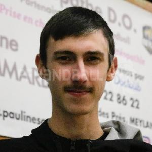
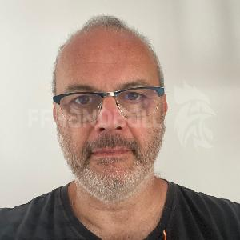
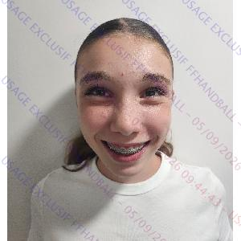
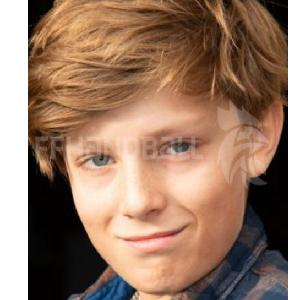
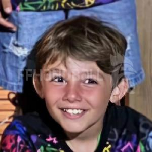
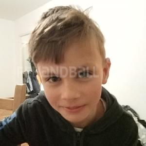
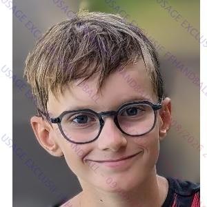
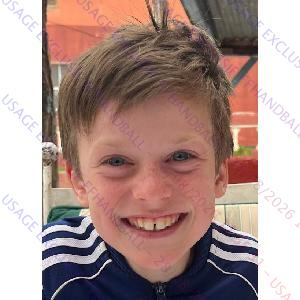

Équipe 26-27
Commission
d'arbitrage
Responsables, juges-arbitres et juges-arbitres jeunes de Meylan Handball.
Responsables

Xavier FINI
Responsable de l'Arbitrage

Patrick CHENEVIERE
Référent désignations
Juges arbitres
Elsa GAIDET
Juge Arbitre Territorial T2
Patrick CHENEVIERE
Juge Arbitre Territorial T3
Xavier FINI
Juge Arbitre Territorial T3
Jules MARTEL
Juge Arbitre Territorial T3

Antoine MELIAND
Juge Arbitre Territorial T3
Juges arbitres jeunes

Augustin MAVRAGANIS
Juge Arbitre Jeune Territorial T3
Kylian TOUR
Juge Arbitre Jeune Territorial T3
Elena LUCATELLI
Juge Arbitre Jeune Territorial T3

Ilona TOUR
Juge Arbitre Jeune Territorial T3

Lucas MIGNOT
Juge Arbitre Jeune Club
Louis FILIPPI
Juge Arbitre Jeune Club

Tim TOUR
Juge Arbitre Jeune Club

Nathan COYNET
Juge Arbitre Jeune Club

Eden MAUJEAN
Juge Arbitre Jeune Club
Maxime COURNEDE
Juge Arbitre Jeune Club
Jens MORLOT
Juge Arbitre Jeune Club
Elikya MULOMBA
Juge Arbitre Jeune Club
Meloe GOLERET
Juge Arbitre Jeune Club

Eliott MAUJEAN
Juge Arbitre Jeune Club

Nathan COURNEDE
Juge Arbitre Jeune Club